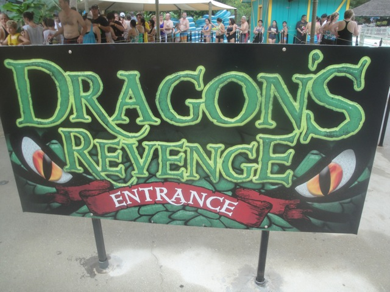
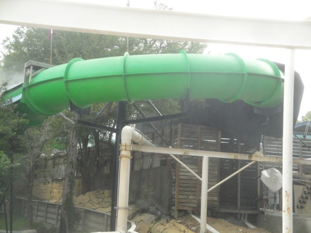
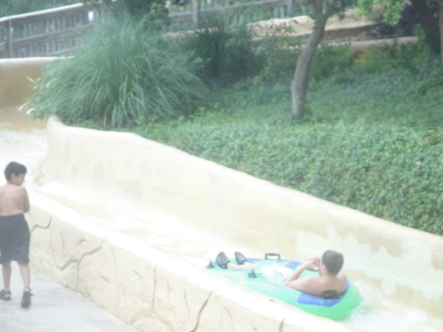
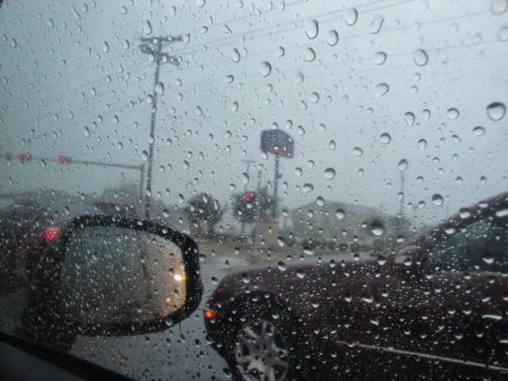

| |
Texas/Rocky Mtn Road Trip
Las Vegas/Castles'N'Coasters
Six Flags Fiesta Texas
Schlitterbahn
Sea World San Antonio
Gavelston Pier
Six Flags Over Texas Silver Dollar City Frontier City Colorado Elitch Gardens Lakeside Park Glenwood Springs
All right. Next up on the trip is Schlitterbahn in New Braunfels, TX. This has been forever been touted as the best water park ever. Best in the country. So of course, we had to stop on by since this wasn't just any ordinary water park. And yeah. This place is freaking awesome. =)
The main highlight of the park are all the tube chutes that take you all around the park.
Ok. Lets start off and do the craziest Tube Chute they've got.
HOLY CRAP!!!! Let me just say right now that these lazy rivers are NOT LAZY AT ALL!!!!
SPLOOSH!!!!!
These tube chutes (or at least the one we did) are crazy!!!! They have a bunch of drops, go fast, and are just a ton of fun. =)
"Hey Mr. Alligator. What time is it and where am I?"
Another fun Schlitterbahn slide that takes you for a wild ride.
 Think this is just another boring water slide? Think again. This ride is AWESOME with some DAMN GOOD AIRTIME!!! =)
Think this is just another boring water slide? Think again. This ride is AWESOME with some DAMN GOOD AIRTIME!!! =)
Ok, if you don't want to do the crazy tube chute we did earlier this morning, you can do this gentle one in the flowers.
 Just in case you forgot where we are.
Just in case you forgot where we are.
 The exit spit out of one of many Schlitterbahn Tube Chutes.
The exit spit out of one of many Schlitterbahn Tube Chutes.
"Excuse me, but where can I find a tube?"
Don't underestimate this slide. As long as you don't slow yourself down, you'll get some 90 degree action here. =)
This place makes me miss Wild Rivers.
 "Sweet!! They've got a swim up bar here!!! I've always wanted to get drunk in a pool!!"
"Sweet!! They've got a swim up bar here!!! I've always wanted to get drunk in a pool!!"
All right. Up next, the Soda Straws.
Yep. These are another set of slides that are crazy fast fun.
Soda Straws is proudly sponsered by Coca Cola because Product Placement is awesome.
 Ok. After our fun at West Schlitterbahn, we moved onto East Schlitterbahn. And despite being the half of Schlitterbahn much more prominently featured on the Travel Channel, West Schlitterbahn is the better half.
Ok. After our fun at West Schlitterbahn, we moved onto East Schlitterbahn. And despite being the half of Schlitterbahn much more prominently featured on the Travel Channel, West Schlitterbahn is the better half.
 First slide I did, Black Knight.
First slide I did, Black Knight.
While it looks like a cool slide, this slide SUCKS!!!! Its slow, trimmed, and more boring than the Abyss.
 But on the bright side, while I did the crappy Black Knight, Cody was waiting in line for Master Blaster. Then I got in line, went up to the front with Cody, told him to not ride Black Knight, and we both saved each other a lot of time. It all worked out in the end.
But on the bright side, while I did the crappy Black Knight, Cody was waiting in line for Master Blaster. Then I got in line, went up to the front with Cody, told him to not ride Black Knight, and we both saved each other a lot of time. It all worked out in the end.
 Master Blaster is fun, but its no Wildebeest.
Master Blaster is fun, but its no Wildebeest.
 Wolf-Pack was an ok slide. Nothing wrong with the family raft slide, but next time, I wouldn't wait as long as we did unless I was with some FAT people.
Wolf-Pack was an ok slide. Nothing wrong with the family raft slide, but next time, I wouldn't wait as long as we did unless I was with some FAT people.

Ok. The final important slide for us to hit is the Dragon's Revenge.

THIS SLIDE WAS AWESOME!!!! It had special effects, and a good layout. A fantastic water slide.

Without a doubt, the star (non tube chute) attraction at Schlitterbahn.
"Hey, there's some treehouse I want to stop at after we leave...OH SH*T!!! IT'S HERE!!!"

Right as we left Schlitterbahn, the sky began to poop and it began thunderstorming.
When we stopped at Taco Bell for dinner, we saw this map of Texas and its amazing just seeing the entire state and thinking we drove all the way from El Paso to San Antonio in one night. And thats not even including all the day driving from Phoeinex to El Paso.
All right. We left San Antonio and are now in Austin.
Story Time. The original plan was to after Schlitterbahn, head up to the Hamilton Pool in Austin to swim there (Hey, swimming there in the rain would be awesome). But we got there and sure enough, its closed. GRR!!!! Oh well. At least we later heard from others that the place was overrated.
Notice how the next city west after San Antonio is El Paso. Yeah. That's 553 miles of driving through literally nothing without stopping. Now try and picture our drive again.
Gee, what can we do now? Oh I know. Lets go back to Six Flags Fiesta Texas and get a night ride on Iron Rattler because that ride is THAT AWESOME!!!!! =)
After our crazy day at Schlitterbahn and our night ride on Iron Rattler, we went back to our Couchsurfing Host's place. Then he got back from work and offered to show us around the Riverwalk at night because this guy is a total badass.
I love San Antonio and this trip.
And we decided to finally close out the night with a stop at Texas Chain, Whataburger (Its good, but its no In'N'Out).
Sea World San Antonio
Home
|